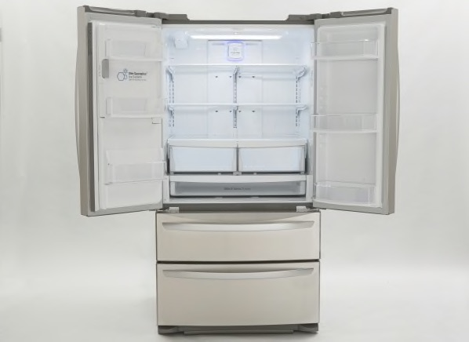
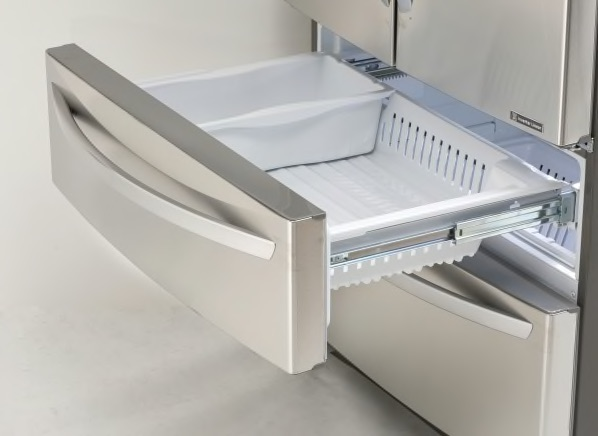
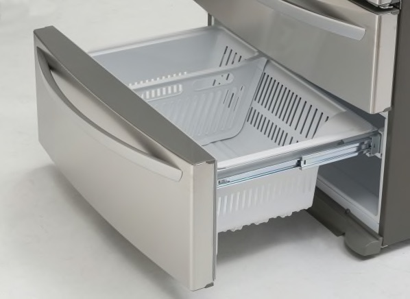
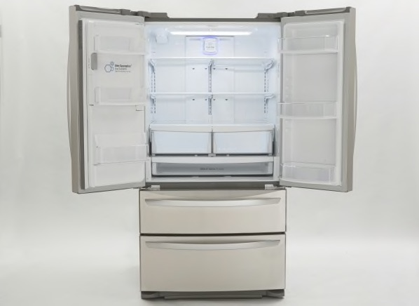
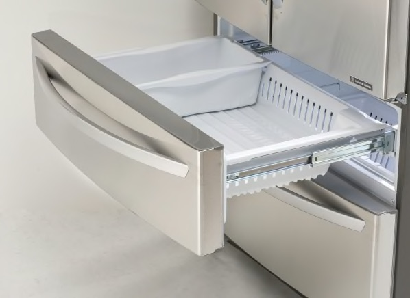
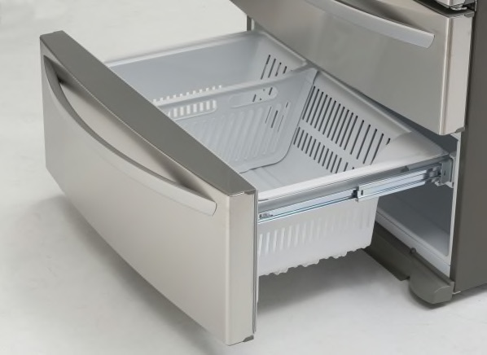
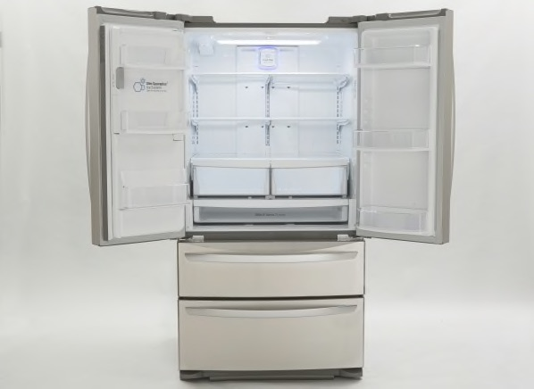
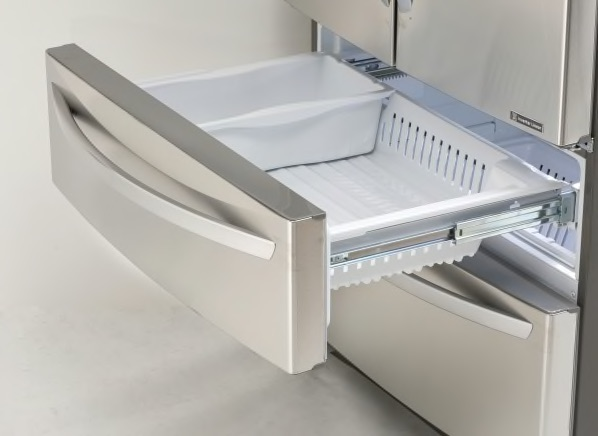
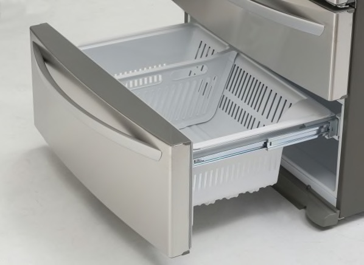

H: 34.5 inches
W: 24 inches
D: 24.5 inches
SKU: 4209901
Photos (click to see larger versions)
From the Consumer Reports review: This Whirlpool dishwasher fits a standard 24" wide opening and was very good in overall performance. It has:
Washing: This model performed excellent in our wash test of heavily soiled dishes. Energy use: This model performed excellent in our energy test, which combines water and energy use for a fully soiled load of dishes. Noise: This model performed mediocre in our noise tests, which combine sound-level measurements and listener judgments. Cycle Time: This model was judged fair for cycle time using a full, heavily soiled load and includes temperature-boost option and heated dry.
Stainless Steel 26.7 cu. ft. Ultra-Capacity 4-door french door refrigerator with dual freezer drawers.
H: 69 inches
W: 36 inches
D: 33 inches
Photos (click to see larger versions)



From the Consumer Reports review: Overall, this is a very good refrigerator with
This is a beautiful custom-built Room and Board armless sofa, with two matching chairs. Everything is in outstanding condition. We had them in our smoke-free house, but moved to a different place and now no longer have room for them. Despite being very comfortable chairs and couch, we rarely used them because they were for guests and we rarely had guests over.
The Room and Board sofa model is "Cameo", and the fabric is a micro-suede called "Desmond". We believe the beige color was named "Fawn" at the time we bought these, but on the current Room and Board website, they don't list a color named "Fawn" and instead the closest Desmond fabric color seems to be named "artic". We tried to take photos with color swatches so that you can get an idea of the color. The color of the wooden feet is a dark chocolate brown named "Cognac".
The sofa is 77" wide. Each chair is 31" wide.
Prices individually:
Price for whole set: $1200.
Photos (click images for large size versions):


This is a sofa set reupholstered with a taupe-colored velvet fabric around 2014. There are two pieces to this sofa; the long piece is shown in this picture, and there is a matching 2-seat piece (not shown, but imagine something identical to the above but with only 2 sections). The long one measures 7' long and 3' deep; the short one is about 4 1/2' long and 3' deep. Photo (click to see larger version):

This is a good quality sofa, originally bought at Roche Bubois (and possibly made under the Roche Bubois brand). It was reupholstered around 2014. It was always kept in a smoke free home and treated nicely, and for a long time only used by my mother.
This is a very solid, professional-grade desk set manufactured by Steelcase. It's all wood and not metal, unlike most Steelcase furniture you see. It measures 64" wide, 23" deep, and about 6' tall. It's red mahogany. It has a 3 file drawers (two can be set for legal or letter size), plus storage on top, and even a built-in fluorescent lamp.
Photo of the file drawer and hutch portion (click for larger version):

The top and bottom halves separate for transport. It is in generally very good condition, with the following points:
the left corner (behind the computer in the photo) has some broken wood where some previous movers damaged it, though this does not affect the ability to assemble it (as you can see) and it can be hidden from sight (as we did).
the drawers do not latch anymore, which is not at all a problem unless the desk happens to be sloped forward (e.g., due to the floor), in which case they will slide open on their own. Solution is simple: make sure to tip the desk slightly such that the front of the desk isn't lower than the back. Easily achieved with wedges under the front feet.
we're not sure we can find the keys to the locks anymore.
There is also a matching front desk, also about 64" wide, but we don't have a photo of it. Here is a photo of a cherry-colored desk with the same shape; our desk has 4 legs instead of a solid panel base like the one pictured here (and is mahogany, not cherry), but this at least gives an idea of what the desk looks like:

We have two wooden storage credenzas available. Each has 3 drawers. They are wood construction in a dark wenge or chocolate brown color. Measurements: 71" long × 22" deep × 14.5" high. Photos (click to see larger versions):


Measures approximately 66" × 42" wide. Photo (click to see larger version):

Measures approximately 63" × 94" wide. Photo (click to see larger version):

This is a self-standing lamp that takes one bulb and has a pull-switch under the shade. The shade is a stiff white linen fabric. It measures 60" tall and the shade part is 14" wide.

We have two of these cute stainless steel + glass lamps. The shape of the arms holding the lamp shade is reminiscent of a person's arms, giving the profile the look of someone holding a shade over their head. The lamps are 18" tall and 16" in diameter. The on/off switch is built into the cord.


Printed fabric on solid backing with wooden frame. The nine inner squares are mounted on the background. Size 37.5" × 37.5".
Photo: